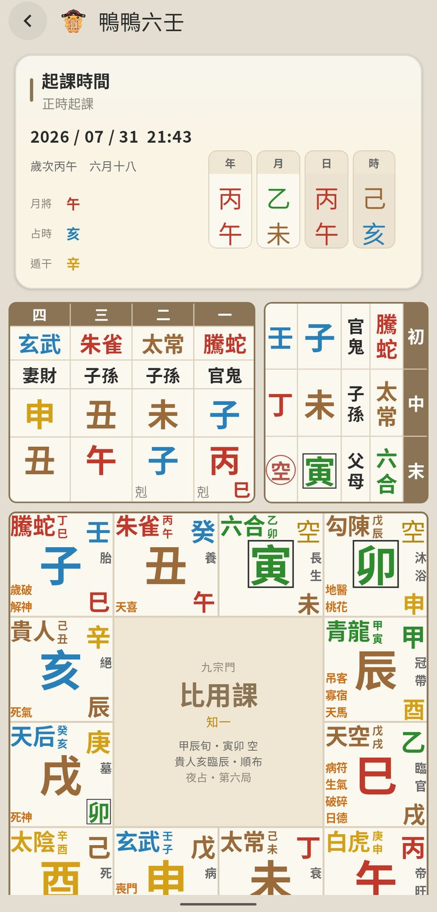
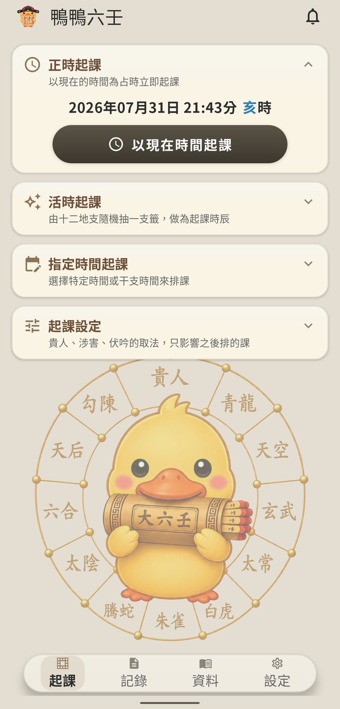
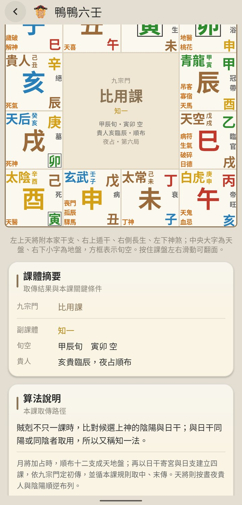
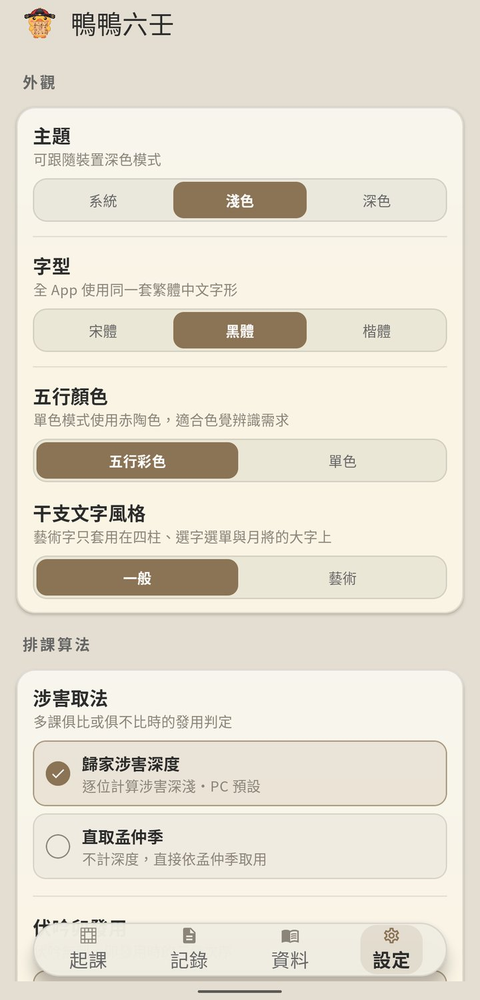

正時、活時、指定時間起課，四課三傳與天地盤一次排好。
正時起課、十二地支活時抽籤、指定時間或干支起課。
四課三傳、天地盤、十二天將、遁干、旬空、長生，俱全呈現。
自動判定課體，課體摘要與取傳路徑逐步說明，知其然也知其所以然。
十二天將、十二月將、解課原則，離線隨手查。
貴人起法、涉害取法、伏吟取法，依師承習慣自由設定。
起課記錄自動保存，占問筆記、星標與搜尋，好收好找。
四課三傳、天地盤、九宗門，一頁看全



